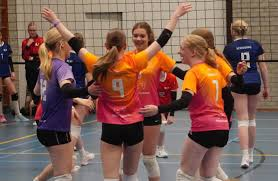

Sporten
Volleybal
Zelf doe ik aan volleybal, ik speel al 10 jaar bij de Meeuwen Zuidhorn.
De positie die ik speel is spelverdeler, dit doe ik al 4 jaar, ook ken ik de posities van diagonaal.
Dit jaar speel ik in B1 en vaak ook in A2.
De afgelopen jaren heb ik samen met mijn team meegedaan aan het MJT Doezum,
dit is een landelijk tournooi waar we afgelopen jaar 6e zijn geworden.
Sinds 1 jaar geef ik op de woensdag training aan kinderen van 12 jaar.
Sinds vorig jaar zijn ze heel erg vooruit gegaan, daar ben ik dus erg blij mee.


Andere sporten
Ik houd heel erg van sporten, vandaar ga ik ook vaak met mijn broertje naar de sportvelden,
om bijvoorbeeld te voetballen, basketballen of iets anders.
Jeu de boules
Sinds jong af aan leert mijn opa mij jeu de boules,
dit vind ik heel erg leuk dus speel ik ook soms tournooien met Dick Askes,
hij was in 2019 nederlands kampioen Tete a la Tete.
van hem leer ik dus heel veel.
Blessures
Afgelopen jaren heb ik veel blessures gehad.
4 jaar geleden kreeg ik de diagnose osgood schlatter,
dit is iets waar veel kinderen in de groei mee te maken krijgen.
Ook had ik nog andere knieklachten alleen weet ik de naam daarvoor niet meer,
deze knieklachten zijn helaas chronisch geworden.
Ook heb ik sinds mei rugklachten, dit kwam doordat ik een blessure opliep tijdens een tournooi.